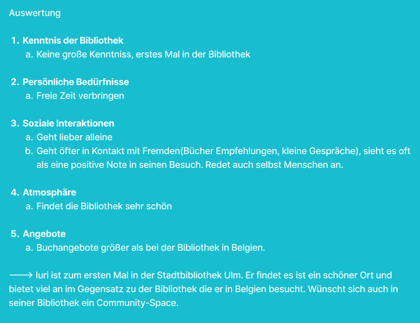

1Interview 1
Christopher, Männlich, 21 Jahre Alt, Auszubildender, Interview vollständig
J.: ,,Danke, dass du dir kurz die Zeit nimmst um mit mir dieses Interview durchzuführen. In diesem Interview werd ich dir ein paar Fragen zu deinem Aufenthalt in der Stadtbibliothek Ulm stellen. Kannst du dich vielleicht kurz vorstellen und mir erzählen was du so gerade machst? also womit du dich im alltag beschäftigst? wo du herkommst oder ob du irgendwelche speziellen interessen hast?”
C.: ,,Ich heiße Christopher. Ich bin 21 Jahre alt und gerade noch ein wenig auf Jobsuche. Letztes jahr war ich noch am studieren, aber ich habe gemerkt, dass das eher weniger was für mich war und ich mich lieber auf andere Dinge konzentrieren will. Deshalb werd ich demnächst eine Ausbildung anfangen.Was meinen Wohnort betrifft, ist es gerad so, dass ich in Ulm geboren wurde, die meiste Zeit in Neu-Ulm gelebt habe, und jetzt in Kassel, also relativ weit weg wohne. Ich komme trotzdem immer alle paar Wochen nach Ulm um Freunde zu besuchen.”
J.: ,,Oh hört sich kompliziert an. Wie oft bist du oder warst du in der gesamten zeit die du in Ulm bzw. Neu-Ulm so verbringst so in der Regel in der Stadtbibliothek Ulm?”
C.: ,,Ich würde jetzt mal mit selten antworten? Also bedingt von der Schule aus ein paar male, wenn man damals bestimmte Literaturquellen in Form von Büchern angeben musste. War sehr hilfreich die Bibliothek in der nähe zu haben. Es war sehr nützlich die Bücher einfach schnell und ohne Probleme ausleihen zu können. Aber das liegt auch eher dran, dass meine Freunde Dinge ausleihen, da die so eine von diesen Mitgliedskarten haben. Ich glaub ich müsste ja dafür zahlen, heißt bei den paar malen, die ich hier war lohnt sich das meiner meinung nach eher weniger. Sonst einfach allgemein hier mal Zeit verbracht als sich die ein oder andere Freundesgruppe zum arbeiten oder lernen treffen wollte.”
J.: ,,Das heißt du bist normallerweise nur mit anderen Freunden hier?”
C.: ,,Ja schon eher, Ich warte gerad noch auf Personen. Die haben den Bus verpasst und brauchen wahrscheinlich noch in etwa nh bisschen bis sie hier sind.”
J.: ,,Ach mies, deshalb aber auch die freie zeit hier.”
C.: ,,Ja, ich war schon am überlegen ob ich ins Gebäude gehe und noch bisschen die Zeit vertreibe, aber passt schon.”
J.: ,,Darf man fragen wieso du nicht einfach rein gehst? Der Eintritt ist kostenlos und wärmer ist es drinnen auch”
C.: ,,Wüsste nicht was ich drinnen machen soll.”
J.: ,Dann vermute ich, du bist nicht zu sehr über die ganzen Angebote und Aktivitäten der Bibliothek informiert, oder? Darf man allgemein fragen wie gut du dich mit der Stadtbibliothek auskennst?”
C.: ,,Im Vergleich zu den ganzen Menschen, die hier wohnen wahrscheinlich sehr wenig. Ich war öfters mal drinnen und mir ist bewusst, wie es drinnen aussieht und dass es in verschiedene Stockwerke aufgeteilt ist mit so unterschiedlichen Bereiche und Themen.”
J.: ,,Und von den Aktivitäten?”
C.: ,,Naja, Ich weiß man kann Bücher und so paar andere spaßige Gegenstände ausleihen. Haben wir damals einmal gemacht, aber daran bin ich eigentlich gerade nicht zu sehr interessiert und ich besitze auch kein Bibliothekskonto, also könnt ich wenn dann eh nur vor ort lesen oder ein Spiel ausprobieren. Nur drinnen ist es eh voll, heißt draußen warten, passt schon.”
J.: ,,Ok, dann direkt zur nächsten frage: Erinnerst du dich noch daran wann du zuletzt dort warst und was der Grund für deinen Besuch war?”
C.: ,,Boah, schwierige Frage, dürfte im Frühjahr gewesen sein. Hatte zu der Zeit ein Projekt von meiner Hochschule und wollte daran zusammen mit Freunden arbeiten.”
J.: ,,Kannst du mir bisschen genauer erzählen was du dort so gemacht hast? also vom Ankommen bis zum Verlassen? Kann auch sehr ungenau sein, falls du dich nich mehr so genau erinnerst”
C.: ,,Zu der Zeit wars auf jeden fall ziemlich voll, hat also bisschen gedauert bis wir damals nen platz gefunden haben. Wir haben ein paar Bücher verwendet und das gratis WLAN genutzt.”
J.: ,,Wie habt ihr herausgefunden wo ihr hinmüsst?
C.: ,,Die Computer die in jeder Etage aufgestellt sind geben Bescheid wo sich die Bücher befinden.”
J.: ,,Gabs dabei irgendwelche Probleme?”
C.: ,,Besimmt wars irgendwie bisschen schwer die zu finden, aber sonst kann ich mich leider nicht mehr genau dran erinnert.”
J.: ,,Das ist ok, war ja schon nh weile her, dann darauf noch als Frage: Wolltest du bei dem Besuch etwas bestimmtes erreichen?”
C.: ,,An sich einfach das Projekt fertigstellen. In Person wars produktiver dran zu arbeiten als Online. Ist meistens der fall, nur das wir sonst so Kaffees oder bei jemandem Zuhause als Option wählen.
J.: ,,Wusstest du bzw deine Freunde denn auch, dass es hier im Gebäude ebenfalls ein Kaffee gibt?”
C.: ,,Schonmal davon gehört, aber es nie ausprobiert. Im obersten Stock, gel?”
J.: ,,Ja, befindet sich ganz oben. Gab es sonst noch irgendetwas, das dich bei dem Besuch überrascht hat?”
C.: ,,Nur, dass wirklich so viel los war, dachte eigentlich dass die Bibliothek eher weniger besucht wird.”
J.: ,,Spielen die anderen Menschen für ihren Aufenthalt dort eine große Rolle?”
C.: ,,Es ist halt schon angenehmer, wenn ein bisschen weniger los ist und es ruhiger ist, trotz dem Fakt, dass es sich um eine Bibliothek handelt.”
J.: ,,Hast du dort schon einmal mit jemandem gesprochen, den du davor nicht kanntest? Falls ja, wie ist das dazu gekommen?”
C.: ,,Ich glaube so richtig gesprochen eher nicht. Nur bei Fragen mal bei der Rezeption nachgefragt. Die waren sehr nett.”
J.: ,,Das heißt, sie haben aber selber noch nie mit so anderen Besuchern geredet.Haben sie schon einmal erlebt, dass Besucher sich gegenseitig geholfen oder Wissen miteinander geteilt haben? Können sie davon erzählen?”
C.: Bestimmt mal über diesselben Interessen ausgetauscht, wenn es Personen gibt, die so die gleichen Bücher mögen? An sich bin ich aber auch eher am raten, glaube die meisten Personen nutzen den Ort zum arbeiten und weniger um Wissen miteinander zuteilen.”
J.: Oh ok, Danke. Dann zur nächsten Frage. Was gefällt dir an der Stadtbibliothek Ulm besonders? Gibt es unterschiede zu der Bibliothek in Kassel?
C.: ,,Die Glaspyramide fällt einem schon sehr ins Auge. Ich glaube die Architektur bleibt an sich jedem im Gedächtnis, egal ob man weiß ob es sich um eine Bibliothek handelt oder eben nicht. In der Bibliothek in Kassel war ich leider noch nie, also keine Ahnung.”
J.: Ok, danke für das Beantworten der Fragen und deiner Zeit. Das genügt bereits!

2Interview 2
Noah, Männlich, 20 Jahre Alt, Maschinenbau-Student, Interview Zusammegefasst
J.: ,,Danke, dass du dir kurz Zeit nimmst und mit mir dieses Interview durchführst. Ich würde dir ein paar Fragen zu deinem Aufenthalt und so einzelnen kleinen Erfahrungen aus der Stadtbibliothek Ulm stellen. Könntest du dich kurz vorstellen, vielleicht kurz erzählen, was du gerade machst und womit du dich so im Alltag beschäftigst?
N.: ,,Mein Name ist Noah, Ich mache gerade im Moment ein duales Studium im Maschinenbau”
J.: ,,Wie gut kennst du die Stadtbibliothek Ulm?”
N.: ,,Ich kenne die Stadtbibliothek sehr gut und gehe eigentlich recht regelmäßig hierher.”
J.: ,,Wann warst du das letzte mal in der Stadtbibliothek Ulm und was war der Grund für deinen Besuch?”
N.: ,,August - Romane ausleihen”
J.: ,,Bei deinem letzten Besuch in der Bibliothek, erinnerst du dich noch was du vom Ankommen bis zum Verlassen gemacht hast?”
N.: ,,Rein gelaufen, 1. Stock Erwachsenen Fantasy Romane - Buchrücken gelesen - Entscheidung getroffen”
J.: ,,Was wollten sie bei diesem Besuch erreichen?”
N.: ,,Lesestoff finden”
J.: Wie hast du herausgefunden, wo du hinmüsst oder was du machen musst?
N.: ,,Vor Ewigkeit an den Rechnern nachgesehen und dann weiß man das halt”
J.: ,,Gab es einen Moment, in dem sie nicht genau wussten, wie etwas funktioniert oder wo sie etwas finden?
N.: ,,Nope, aber bin halt schon ewig "Kunde" der Stadtbibliothek
J.: Ist etwas anders gelaufen, wie du es erwartest hast?
N.: ,,War genauso wie erwartet
J.: ,,Welche Bereiche der Bibliothek besuchst du normalerweise?”
N.: ,,Englischsprachige Jugendromane und Erwachsenen Fantasy und Maschinenbau Fachbücher”
J.: ,,Gibt es etwas, das du gerne ausprobieren würdest, bisher aber noch nicht ausprobiert hast?”
N.: ,,Es gibt nichts was ich gerne ausprobieren möchte”
J.: ,,Wie entscheiden sie, wo sie sich in der Bibliothek aufhalten und wie lange sie bleiben?”
N.: ,,Meine eigene Stimmung und ob ich schnell oder langsam ein Buch finde”
J.: ,,Besuchst du die Bibliothek normalerweise alleine oder mit anderen?”
N.: ,,Meistens alleine
J.: ,,Welche Rolle spielen andere Menschen für ihren Aufenthalt dort?
N.: ,,Eine nebensächliche Rolle, man muss ja nicht mit den Menschen interagieren...
J.: ,,Welche Angebote oder Bereihe bringen ihrer Meinung nach Menschen zusammen?
N.: ,,Maker Space bringt Leute zusammen”
J.: ,,Haben sie schonmal erlebt, dass Besucher sich gegenseitig geholfen oder Wissen miteinander geteilt haben?
N.: ,,Wenn man was sucht und es nicht findet und jemand da steht der so aussieht wie wenn er nen Plan hätte dann fragt man den halt...”
J.: ,,Was gefällt ihnen an der Stadtbibliothek besonders?
N.: ,,Offene warme Atmosphäre durch Glas Baustil, gutes Katalogsystem mit dem man schnell Bücher die man sucht findet, das neue Bücher hervorgehoben hingestellt werden
J.: ,,Was kan die Stadtbibliothek ihrer Meinung nach besser als andere Orte, an denen man lernen, arbeiten oder Zeit verbringen kann?
N.: ,,Da die Stadtbücherei ein relativer Stiller Ort ist und Tische bietet und sogar Räume für Gruppen für Gruppenarbeit kann man sich hier gut konzentrieren und dementsprechend gut lernen”
J.: ,,Was kann die Stadtbibliothek ihrer Meinung nach besser als andere Orte, an denen man lernen, arbeiten oder Zeit verbringen kann?”
N.: ,,Falls etwas unklar ist, im Zweifel die Biblitohekar*innen fragen, die können das rausfinden und sind super nett!”
J.: ,,Das wärs dann auch schon. Danke fürs mitmachen!”

3Interview 3
Anastasia , Weiblich, 22 Jahre Alt, Master-Psychologie Studentin
Platzhaltertextttt, tipp einfach alles hier ein und jedesmal wenn du nen Zeilenumbruch einfügen willst, schreib
dahinter :3
4Interview 4
Sascha , Männlich, 23 Jahre Alt, Pädagogik-Student
blablablaaaaa
5Interview 5
Iuri, Männlich, 24 Jahre Alt
A: Thank you for taking a moment of your time to do the interview with us. In this interview we will ask you a couple of questions about your time in the city library. Could you please tell us a little bit about yourself?
I: Hello I'm glad to be of help, I'm Iuri, I'm 24 years old and I came here to visit a friend here in Germany I'm currently waiting for her.
A: I see so you're from a different country. Could you tell us which country you're from?
I: Why yes I can, I come Belgium, it's one of the neighbouring countries to Germany about 6 hours away by train.
A: Is this your first time at the city library then? Or have you been here before?
I: It is the first time I'm at this city library, i must say its beautiful.
A:I'm glad to hear that you like our library here. How would you say this library compares to the one from your home in Belgium?
I: If I were to describe it, there's definitely a distinction between the amount of utility in the libraries themselves. Back home we don't have more than the computers and the books, hell we don't really even have communal areas.
A: I see. So in your opinion do you prefer a library as a place of quiet, where you just go to read and study or would you say the library would make a good communal space?
I: I'd like to think it makes a good communal space it definitely has its charm while quiet and studious, but if that were the case I would read at home if i really preferred that quiet atmosphere.
A: Do you visit the library with your friends often?
I: No I do not, usually when I go to the library I'm by myself i tend to lose track of everything while reading, so i would find it unfair to have company while that happens.
A: So then what role would you say other people play in your time spent in the library?
I: I'd say that they tend to have either small talk or like suggestions for certain books or genres It's usually a positive note to my library visit.
A: How often would you say do you come into contact with strangers in the library as in starting a conversation or getting asked to do something?
I: It's a pretty normal occurrence I would say. I take a glance and if I happen to see a person that is looking at a book I may know, or if I potentially could help them I'd approach them for conversation.
A: Are there situations in which you would like to use the library together with others?
I: I'd say probably with friends that would like to be outside together and the library is the first thing that comes to mind
A: That's very interesting to hear because from our observations not many people actually use the conference table in the community area. Would you say if your library had that you and your friends would use it?
I: I find that quite unfortunate as that would be the perfect place to get together and you know have a little chat and a read, we definitely would use the community area ourselves if given the opportunity.
A: Maybe the conference table is being taken from granted here. But that aside, is there anything that bothers you or wastes your time when using the library?
I: That might be so but that's not my place to speak on, there's nothing really that bothers me in or wastes my time necessarily besides maybe idlers that remain stuck in the way?
A: I see. Since this is your first visit, I will ask you on your next visit to Germany would you consider coming here again to spend some more time or is this a one time thing?
I: Yes I would like to come back here next time I'm here in Germany, maybe with some Company while I'm at it, i have thoroughly enjoyed it.
A: What did you enjoy in this library in particular?
I: I enjoyed the atmosphere and the diversity in the books it's quite the difference from the usual library I'm used to back home
A: Well I'm glad to hear that you enjoyed your visit here. Thank you very much for taking your time to do this interview with us. Have a nice day.
I: I'm glad I was able to help and thank you for asking me, may you have a nice day as well.

6Interview 6
Anonym, Weiblich, Medizintechnik-Studentin
Wie gut kennen sie die Stadtbibliothek Ulm?
Also, ich bin meistens zum Lernen dort oder in der Schulzeit habe ich da halt recherchiert für meine W-Seminar-Arbeit.
Wann waren sie zuletzt dort und was war der Grund für ihren Besuch?
Das letzte Mal war in den Prüfungswochen vom Sommersemester, ich weiß leider nicht mehr den Zeitpunkt, aber da war ich zum Lernen.
Denken sie bitte an ihren letzten Besuch in der Bibliothek. Können sie erzählen, was sie vom Ankommen bis zum Verlassen gemacht haben?
Also, einfach nochmal reingelaufen und geschaut, wo es Tische gibt, wo man sich hinhocken kann. Das Problem ist ja, die Bibliothek macht um 10 Uhr auf und dann ist es direkt voll. Also, du hast Leute, die stellen sich schon an, also draußen schon, bevor die Bibliothek offen ist. Und deswegen muss man immer noch früher da sein und dann versuchst du einfach, so schnell wie möglich einen Tisch zu bekommen. Und da gibt es ja auf jeder Ebene ein paar Tische, die verteilt sind, also erst mal da gesucht. Aber dann irgendwo, ich glaube, ich war dann im Philosophiebereich oder so, wo ich einen Tisch gefunden habe mit einer Freundin und dann haben wir zusammen hingehockt und gelernt. Ich meine, da gibt es ja auch Steckdosen und Licht und sowas, deswegen ist es ganz angenehm. Und dann, ich meine, es wird sehr warm, deswegen waren wir dann doch nicht bis zum Ende da. Aber wir haben dann gemeinsam gelernt und ein bisschen uns umgeguckt, was für Tische da sind und dann sind wir weggegangen
Was wollten sie bei diesem Besuch erreichen?
Einfach einen ruhigen Ort haben zum Lernen, weil es an der Hochschule meistens auch besetzt ist. Es gibt ja schon sowas, an den Cafés kann man aber nicht gut lernen.
Wie haben sie herausgefunden, wo sie hinmüssen oder was sie machen müssen?
Also, als ich in der Schulzeit recherchiert habe, da war mein Thema Klebetechnik. Und bei uns in der Stadtbibliothek in Günzburg gibt es nichts zu dem Thema. Deswegen war das in der Stadtbibliothek das Nächste, wo es größer ist und wo Bücher aus den technischen Bereichen sowas anbieten. Da haben wir nach Kategorien gesucht, nach den Büchern und geguckt, ob es was gibt. Wobei ich muss sagen, es gab sehr wenig Auswahl, was Klebetechnik angeht. Das war dann doch sehr spezifisch. Das war dann im Chemiebereich und da haben wir da was gefunden gehabt. Oder habe ich was gefunden gehabt. Und dann haben wir mit Mitarbeiterinnen und Mitarbeitern geredet wegen den Büchern, ob die uns helfen können, wo wir am besten suchen sollten. Die sind ja auch nach Etagen aufgeteilt, Thema, Täuscherei. Uns wurde halt gesagt, wenn wir an der Hochschule keinen Platz finden, dass wir die Stadtbibliothek ausprobieren sollen, weil der Einsatz kostenlos ist und du da einfach reingehen kannst und dir auch keinen Stress machen, wenn du nur zum Lernen gehst oder sowas. Da gibt es eben auch genügende Tische. Und dann sind wir einfach... Also zuerst, wo wir reingegangen sind, gab es keinen Platz. Aber das nächste Mal sind wir früher gekommen und dann haben wir halt Platz gefunden. Ja, war ganz angenehm. Da hast du halt alles Mögliche schon da. So Steckdosen und sowas. Und deswegen war das dann schön, dort zu lernen.
Gab es einen Moment, in dem sie nicht genau wussten, wie etwas funktioniert oder wo sie etwas finden?
Ja, ich meine, eine Freundin von mir, die wollte ein Buch ausleihen. Wir sind die Bibliothek, wo wir in Greensburg gewohnt sind, wo du halt eine Theke hast, wo dann eine Person einfach einscannt. Und dann war das so ein bisschen, wie genau bekommt man einen Ausweis und wie leitet man genau Bücher aus. Das war halt ein bisschen ungewohnt, wenn man von einer kleineren Stadt kommt. Aber wir haben einfach nachgefragt an dieser Empfangstheke oder diesem vorderen Tisch da. Und dann hat sie uns geholfen, hat es erklärt gehabt und hat uns auch gesagt, wir sollen da, wo wir Schüler sind oder so, hat sie ein paar Sachen erklärt gehabt und hat das funktioniert
Ist etwas anders gelaufen, als sie es erwartet hätten?
Ich meine, ich habe halt erwartet gehabt, dass sie auch im technischen Bereich viel mehr haben. Ich habe das Gefühl, sie haben einen sehr großen Kinderbereich. Und ich habe gedacht, vielleicht bei Technik, dass es mehr gibt. Also Technik, Chemie, dass es mehr geben wird. Aber das war ein kleiner Teil vom Regal, wo dann wirklich was für mich war. Alles andere war dann schon wieder fremd von meinem Thema. Ich habe mehr Auswahl erwartet eigentlich. Aber das hat dann auch irgendwie funktioniert gehabt. Und es wird dann im Sommer schon sehr warm. Vor allem, wenn du dann weiter oben bist oder sowas, wird es schon sehr warm. Da muss man darauf halt gefasst sein. Aber dann passt es auch irgendwie.
Gab es etwas, das sie bei diesem Besuch überrascht hat?
Also bei uns in der Bibliothek gibt es keine Steckdosen. Deswegen war das so ein Boah-Steckdosen-Cool. Und dass es auch ein Klavier gab, das man spielen konnte. Aber halt so, dass es die anderen Personen nicht stört. Aber das fand ich ganz cool. Und im Erdgeschoss gibt es, glaube ich, auch Nähmaschinen. Nähmaschinen und 3D-Drucker bis da. Das fand ich vollkommen geil, dass das angeboten wird. Ich habe die Nähmaschinen nie genutzt oder den 3D-Drucker. Aber ich fand es mega cool, dass es das gibt. Und dass es überhaupt ganz oben das Kaffee gibt, finde ich auch cool. Ich muss sagen, Kaffee, ich war einmal dort. Die Bänke und so sind halt sehr hart. Aber dass es das überhaupt gibt, fand ich dann schon ganz cool. Und es gibt halt diese Geräte, wo man nur das Buch hinstellt. Du musst dann nicht den QR-Code oder die Barcode scannen. Sondern du legst es einfach hin und es geht. Und dann erkennt es automatisch den QR-Code. Weil wenn du viele Sachen auf einmal ausleihst.
7Interview 7 - Bibliothekarin
Anonym, Weiblich, Bibliothekarin aus der Stadtbibliothek Ulm.
blablablaaaaa